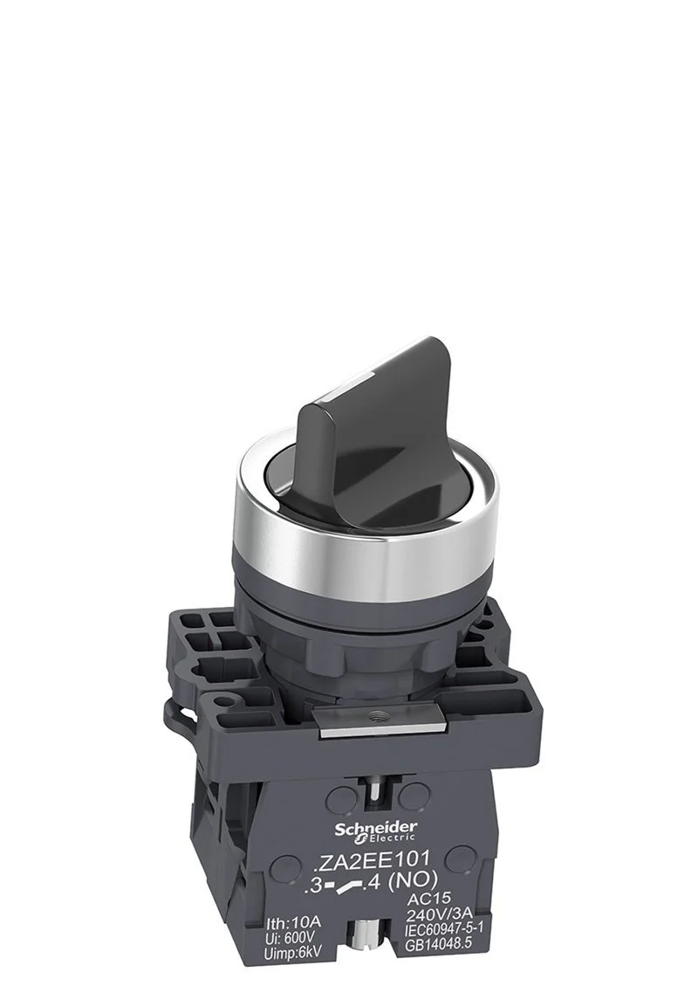
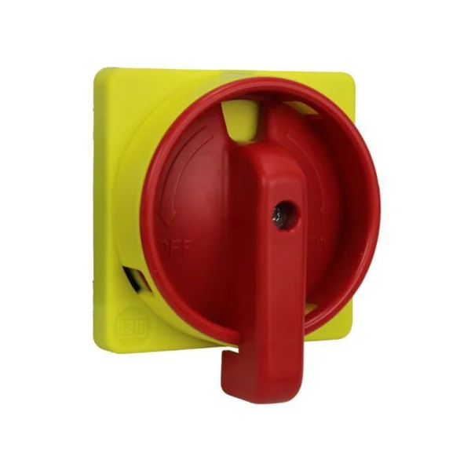
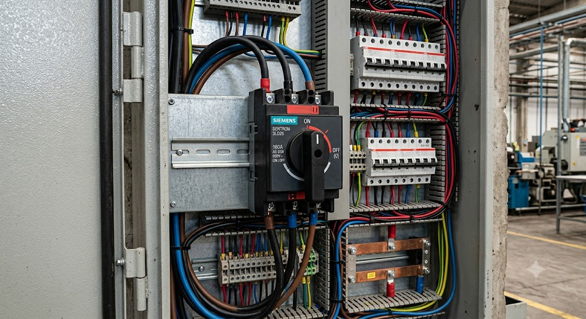

Chave Manopla
Dispositivo utilizado no comando e acionamento de circuitos elétricos em sistemas de automação industrial.
Conceito e Aplicação
A chave manopla é um dispositivo eletromecânico utilizado para comando manual de circuitos elétricos, permitindo ligar, desligar ou selecionar funções em sistemas industriais. É amplamente utilizada em painéis elétricos e quadros de comando.
- Seleção de modos de operação (manual/automático);
- Comando de partida e parada de equipamentos;
- Utilizada em painéis de controle e quadros elétricos;
- Aplicada em máquinas industriais e sistemas de automação.
Informações Complementares

Funcionamento
Realiza o acionamento e seleção manual de circuitos elétricos por meio de rotação ou comutação mecânica.

Aplicações
Utilizada em painéis, máquinas e sistemas de automação para seleção de modos e acionamento de circuitos.

Vantagens
Oferece praticidade, segurança e facilidade no acionamento e seleção de funções nos sistemas de controle.
Empresas
A WEG, a ABB e a Eaton são algumas das principais fabricantes de chaves manopla utilizadas em sistemas elétricos e automação industrial.
: Empresa brasileira líder em equipamentos elétricos, com linha completa de chaves manopla para comandos industriais.
: Multinacional suíço-sueca referência em eletrificação e automação, oferecendo manoplas robustas para ambientes industriais.
: Líder global em gerenciamento de energia, com soluções de chaves manopla para controle seguro de circuitos elétricos.